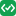

Original
The first version, for comparison.


A. Bold Blue
One color. Marks scaled up and thickened to fill the tile, in the blue the panel already uses.
B. Cutout
True negative space: the brackets and check are holes in a green tile, so the toolbar shows through.

C. Open Bracket
The check takes the place of the closing bracket. Two shapes instead of three, so each can be much larger.
D. Badge
The check sits in a solid green disc, with small brackets hugging it, on an indigo-to-violet tile.
E. Light
A white tile with navy brackets and a green check: the inverse of the original.
F. Original 2
Your edit: white tile, navy brackets, and a larger, heavier green check that breaks out past the right bracket.
G. Summit Natural
Straight swap: natural tile (#F0EFEB), near-black brackets (#1F1C1F), bright magenta check (#C42D82).
H. Summit Dark
The dark default of the Summit ML apps: near-black tile, natural brackets, bright magenta check.
I. Summit Blue and Magenta
Both brand colors: natural tile, Summit blue brackets (#3A6786), magenta check (#991E66).
J. Summit Gradient
Dark tile and natural brackets, with the check drawn in the brand gradient from blue to magenta.